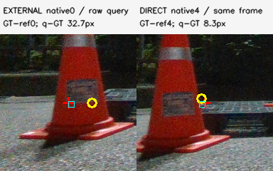
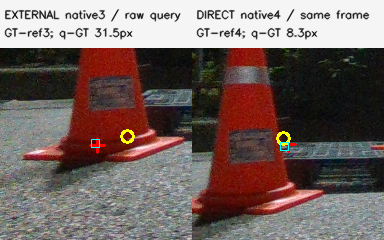
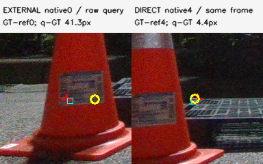
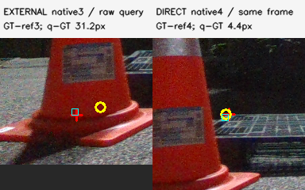
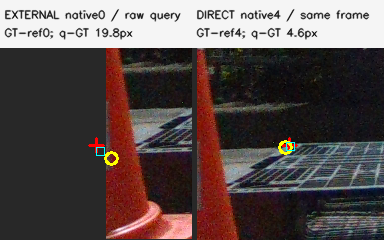
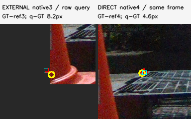
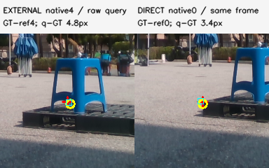
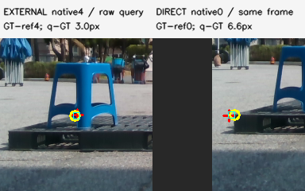
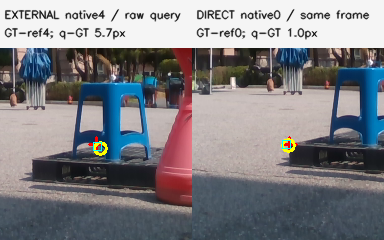

eval_night08:1779449488068910592 native0 initial gate=U, q-GT=32.7 px, LOGO p-visible=0.9453553493644041

Red cross: original native query. Cyan square: initial model projection. Yellow ring: CAL annotation after the declared native-to-reference mapping. Right: nearest eligible DIRECT query in the same frame. These are CAL diagnostics; annotation coordinates are never image features.
eval_night08:1779449488068910592 native0 initial gate=U, q-GT=32.7 px, LOGO p-visible=0.9453553493644041

eval_night08:1779449488068910592 native3 initial gate=U, q-GT=31.5 px, LOGO p-visible=0.9828256226410393

eval_night08:1779449499143611648 native0 initial gate=U, q-GT=41.3 px, LOGO p-visible=0.9767171039108131

eval_night08:1779449499143611648 native3 initial gate=U, q-GT=31.2 px, LOGO p-visible=0.9930128237899147

eval_night08:1779449501478488320 native0 initial gate=T, q-GT=19.8 px, LOGO p-visible=None

eval_night08:1779449501478488320 native3 initial gate=T, q-GT=8.2 px, LOGO p-visible=None

eval_outside:1778651519235162880 native4 initial gate=U, q-GT=4.8 px, LOGO p-visible=0.9999454300599923

eval_outside:1778651530691638016 native4 initial gate=U, q-GT=3.0 px, LOGO p-visible=0.9479666554117858

eval_outside:1778651579029250816 native4 initial gate=U, q-GT=5.7 px, LOGO p-visible=0.9998937068645798
